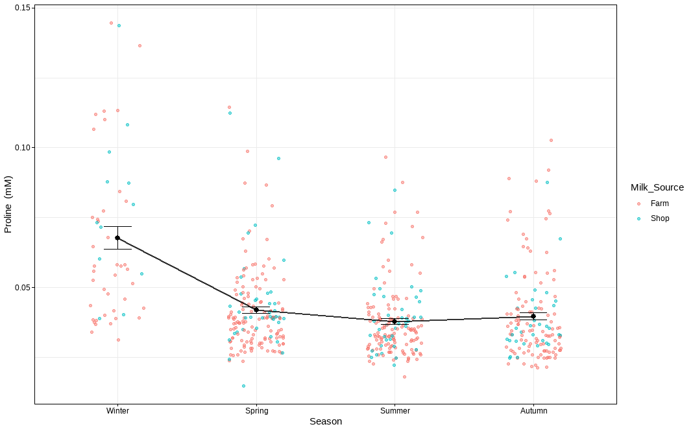
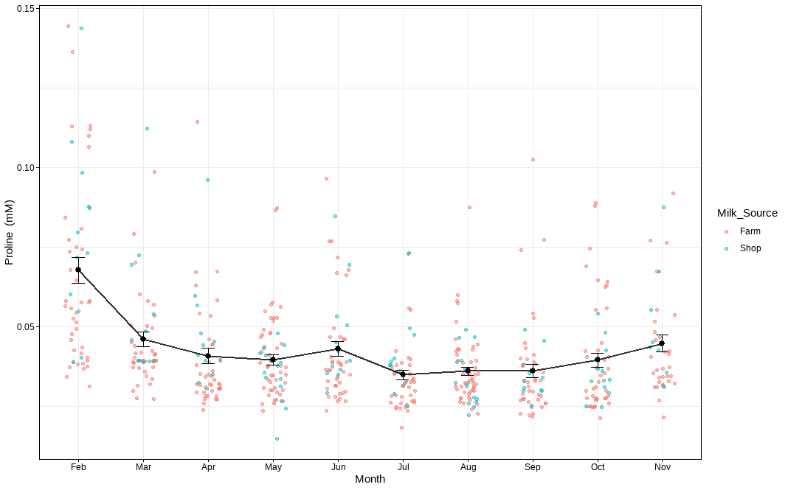
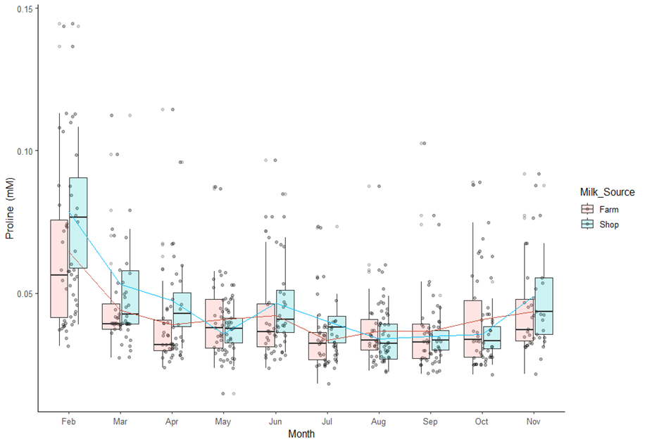
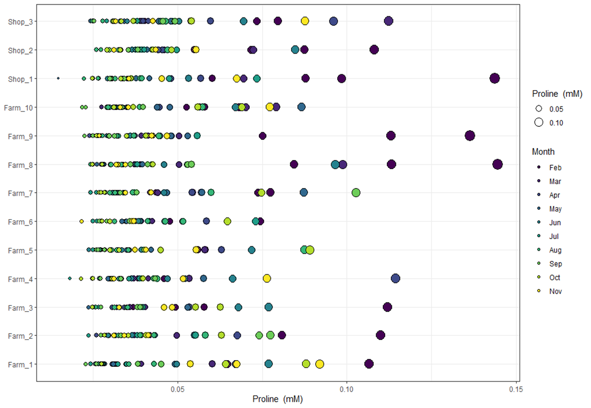

MetaBó-Cards / Proline
Proline
Amino acidMBB46Key seasonal marker (VIP > 1)Proline is used for the production of β-casein.
Look it up: HMDB ↗ · PubChem 145742 ↗ · ChEBI ↗ · KEGG ↗
About Proline
- Chemical class
- Non-essential amino acid
- Biochemical description
- Proline is used for the production of β-casein.
- Seasonal trend · seasonality study
- Proline concentrations were significantly influenced by season (p < 0.001), with higher concentrations in winter compared to other seasons.
- MetaBó-Bainne ID
- MBB46
- Milk Composition Database
- BMDB0000162 ↗
- PubChem compound
- CID 145742 ↗
Seasonality of the pasture-based milk metabolome
Peak monthFebruary
Lowest monthJuly
Low to peak1.9×
| Winter | Spring | Summer | Autumn | Mean lactation |
|---|---|---|---|---|
| 0.068 ± 0.03 | 0.042 ± 0.015 | 0.038 ± 0.013 | 0.04 ± 0.016 | 0.043 ± 0.019 |
Monthly means (mM)
| Feb | Mar | Apr | May | Jun | Jul | Aug | Sep | Oct | Nov |
|---|---|---|---|---|---|---|---|---|---|
| 0.068 | 0.046 | 0.041 | 0.04 | 0.043 | 0.035 | 0.036 | 0.036 | 0.04 | 0.045 |
Seasonality study · individual samples
Figures
Plots of every milk sample in the seasonality study. Click to enlarge.








Related metabolites
Other amino acid compounds in the database.